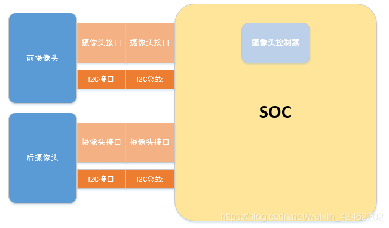
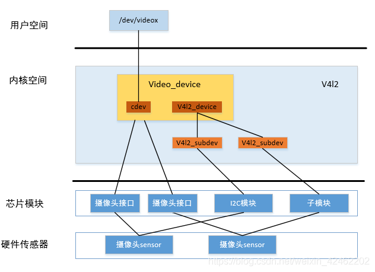
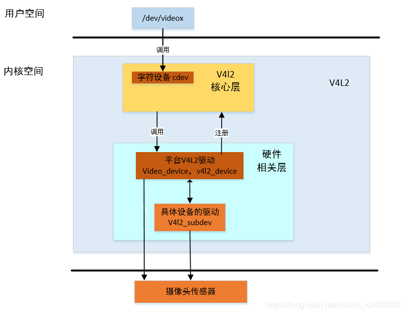

Video for Linux two(简称v4l2)
一、概述
vl42是video for Linux 2的缩写，是一套Linux内核视频设备的驱动框架，该驱动框架为应用层提供一套统一的操作接口(一系列的ioctl)。包括一套数据结构和底层V4L2驱动接口。只能在Linux下使用。
V4L2在设计时，是要支持很多广泛的设备的，它们之中只有一部分在本质上是真正的视频设备，可以支持多种设备,它可以有以下几种接口
video capture interface：视频采集接口，这种接口应用于摄像头，v4l2在最初设计的时候就是应用于这种功能
video output interface：视频输出接口，将静止图像或图像序列编码为模拟视频信号，通过此接口，应用程序可以控制编码过程并将图像从用户空间移动到驱动程序
video overlay interface：视频直接传输接口，可以将采集到的视频数据直接传输到显示设备，不需要cpu参与，这种方式的显示图像的效率比其他方式高得多
其他接口这里就不介绍了，下面来看一下v4l2的API
二、作用
它使程序有发现设备和操作设备的能力。它主要是用一系列的回调函数来实现这些功能。像设置摄像头的频率、帧频、视频压缩格式和图像参数等等。并使得它们的输出标准化。当然也可以用于其他多媒体的开发，如音频等。
三、存放位置
在Linux下，所有外设都被看成一种特殊的文件，成为“设备文件”，可以象访问普通文件一样对其进行读写。一般来说，采用V4L2驱动的摄像头设备文是/dev/v4l/video0。为了通用，可以建立一个到/dev/video0的链接。V4L2支持两种方式来采集图像：内存映射方式(mmap)和直接读取方式(read)。V4L2在include/linux/videodev.h文件中定义了一些重要的数据结构，在采集图像的过程中，就是通过对这些数据的操作来获得最终的图像数据。Linux系统V4L2的能力可在Linux内核编译阶段配置，默认情况下都有此开发接口。V4L2从Linux 2.5.x版本的内核中开始出现。结构体详细参数可以在/include/uapi/linux/videodev2.h中查看。
四、V4l2框架操作流程
1
2
3
4
5
6
7
8
9
10
11
12
13
14
15
16
17
18
19
20
21
22
23
24
25
26
27
28
29
30
31
32
|
int fd = open("/dev/video0",O_RDWR);
ioctl(fd,VIDIOC_QUERYCAP,&cap);
ioctl(fd,VIDIOC_S_FMT,&fmt);
ioctl(fd, VIDIOC_REQBUFS, &req);
ioctl(fd, VIDIOC_QUERYBUF, &buf);
buffers[i].length = buf.length;
buffers[i].start = mmap(NULL, buffers[i].length, PROT_READ | PROT_WRITE, MAP_SHARED, fd, buffers[i].offset);;
ioctl (fd, VIDIOC_QBUF, &buf);
ioctl (fd, VIDIOC_STREAMON, &type);
ioctl (fd, VIDIOC_DQBUF, &buf);
fp = fopen(picture.yuv,"w");
fwrite(addr,1,length,fp);
fclose(fp);
ioctl (fd, VIDIOC_QBUF, &buf);
ioctl (fd, VIDIOC_STREAMOFF, &type);
unmap;
close(fd);
|
五、V4l2的常用IOCTL接口命令–>>结构体介绍
1、常用的IOCTL接口命令
在内核目录include/linux/videodev2.h中定义
1
2
3
4
5
6
7
8
9
10
11
12
13
14
15
16
17
18
19
| VIDIOC_QUERYCAP
VIDIOC_QUERYSTD
VIDIOC_S_INPUT
VIDIOC_ENUMINPUT
VIDIOC_S_PARM
VIDIOC_ENUM_FMT
VIDIOC_S_FMT
VIDIOC_G_FMT
VIDIOC_TRY_FMT
VIDIOC_CROPCAP
VIDIOC_S_CROP
VIDIOC_G_CROP
VIDIOC_REQBUFS
VIDIOC_QUERYBUF
VIDIOC_QBUF
VIDIOC_DQBUF
VIDIOC_STREAMON
VIDIOC_STREAMOFF
VIDIOC_EXPBUF
|
2、常用的结构体
在内核目录include/linux/videodev2.h中定义。参见/include/uapi/linux/videodev2.h
1
2
3
4
5
6
7
8
9
10
| struct v4l2_capability //视频设备的功能，对应命令VIDIOC_QUERYCAP
struct v4l2_std_id //视频制式
struct v4l2_input //视频输入信息，对应命令VIDIOC_ENUMINPUT
struct v4l2_streamparm //结构体v4l2_streamparm来描述视频流的属性
struct v4l2_standard //视频的制式，比如PAL，NTSC，对应命令VIDIOC_ENUMSTD
struct v4l2_format //帧的格式，对应命令VIDIOC_G_FMT、VIDIOC_S_FMT等
struct v4l2_crop //视频信号矩形边框
struct v4l2_requestbuffers //申请帧缓冲，对应命令VIDIOC_REQBUFS
struct v4l2_buffer //驱动中的一帧图像缓存，对应命令VIDIOC_QUERYBUF
struct v4l2_exportbuffer //导出fd
|
1、v4l2_capability
1
2
3
4
5
6
7
8
9
| struct v4l2_capability
{
u8 driver[16];
u8 card[32];
u8 bus_info[32];
u32 version;
u32 capabilities;
u32 reserved[4];
};
|
其中域 capabilities 代表设备支持的操作模式，常见的值有 V4L2_CAP_VIDEO_CAPTURE | V4L2_CAP_STREAMING 表示是一个视频捕捉设备并且具有数据流控制模式；另外 driver 域需要和 struct video_device 中的 name 匹配。
1
2
3
4
5
6
7
8
9
10
| struct v4l2_input {
__u32 index;
__u8 name[32];
__u32 type;
__u32 audioset;
__u32 tuner;
v4l2_std_id std;
__u32 status;
__u32 reserved[4];
};
|
视频捕获的应用首先要通过VIDIOC_ENUMINPUT命令来枚举所有可用的输入。在V4L2层，这个调用会转换成调用一个驱动中对应的回调函数：
int (*vidioc_enum_input)(struct file *file, void *private_data, struct v4l2_input *input);
1
2
3
4
5
6
7
8
9
10
11
12
13
14
15
16
17
18
19
20
21
22
23
24
25
26
27
28
29
| struct v4l2_format {
enum v4l2_buf_type type;
union {
struct v4l2_pix_format pix;
struct v4l2_window win;
struct v4l2_vbi_format vbi;
struct v4l2_sliced_vbi_format sliced;
__u8 raw_data[200];
} fmt;
};
enum v4l2_buf_type {
V4L2_BUF_TYPE_VIDEO_CAPTURE = 1,
V4L2_BUF_TYPE_VIDEO_OUTPUT = 2,
V4L2_BUF_TYPE_VIDEO_OVERLAY = 3,
...
V4L2_BUF_TYPE_PRIVATE = 0x80,
};
struct v4l2_pix_format {
__u32 width;
__u32 height;
__u32 pixelformat;
enum v4l2_field field;
__u32 bytesperline;
__u32 sizeimage;
enum v4l2_colorspace colorspace;
__u32 priv;
};
|
常见的捕获模式为 V4L2_BUF_TYPE_VIDEO_CAPTURE 即视频捕捉模式，在此模式下 fmt 联合体采用域 v4l2_pix_format：其中 width 为视频的宽、height 为视频的高、pixelformat 为视频数据格式（常见的值有 V4L2_PIX_FMT_YUV422P | V4L2_PIX_FMT_RGB565）、bytesperline 为一行图像占用的字节数、sizeimage 则为图像占用的总字节数、colorspace 指定设备的颜色空间。
4、v4l2_requestbuffers
1
2
3
4
5
6
7
8
9
10
11
| struct v4l2_requestbuffers {
__u32 count;
enum v4l2_buf_type type;
enum v4l2_memory memory;
__u32 reserved[2];
};
enum v4l2_memory {
V4L2_MEMORY_MMAP = 1,
V4L2_MEMORY_USERPTR = 2,
V4L2_MEMORY_OVERLAY = 3,
};
|
VIDIOC_REQBUFS 命令通过结构 v4l2_requestbuffers 请求驱动申请一片连续的内存用于缓存视频信息;count 指定根据图像占用空间大小申请的缓存区个数，type 为视频捕获模式，memory 为内存区的使用方式.
5、v4l2_buffer
1
2
3
4
5
6
7
8
9
10
11
12
13
14
15
16
17
18
19
20
21
22
23
24
25
26
27
28
29
30
31
32
33
| struct v4l2_buffer {
__u32 index;
enum v4l2_buf_type type;
__u32 bytesused;
__u32 flags;
enum v4l2_field field;
struct timeval timestamp;
struct v4l2_timecode timecode;
__u32 sequence;
enum v4l2_memory memory;
union {
__u32 offset;
unsigned long userptr;
struct v4l2_plane *planes;
} m;
__u32 length;
__u32 input;
__u32 reserved;
};
struct v4l2_plane {
__u32 bytesused;
__u32 length;
union {
__u32 mem_offset;
unsigned long userptr;
__s32 fd;
} m;
__u32 data_offset;
__u32 reserved[11];
};
|
flags 为缓存当前状态（常见值有 V4L2_BUF_FLAG_MAPPED | V4L2_BUF_FLAG_QUEUED | V4L2_BUF_FLAG_DONE，分别代表当前缓存已经映射、缓存可以采集数据、缓存可以提取数据）
另外 VIDIOC_QUERYBUF，VIDIOC_QBUF 和 VIDIOC_DQBUF 命令都采用结构 v4l2_buffer 与驱动通信：VIDIOC_QBUF 命令向驱动传递应用程序已经处理完的缓存，即将缓存加入空闲可捕获视频的队列，传递的主要参数为 index；VIDIOC_DQBUF 命令向驱动获取已经存放有视频数据的缓存，v4l2_buffer 的各个域几乎都会被更新，但主要的参数也是 index，应用程序会根据 index 确定可用数据的起始地址和范围。
6、v4l2_captureparm
设置Stream参数。(主要是采集帧数)
1
2
3
4
| struct v4l2_streamparm parms;
parms.parm.capture.timeperframe.numerator=1;
parms.parm.capture.timeperframe.denominator=60;
rel = ioctl(fdUsbCam,VIDIOC_S_PARM, setfps);
|
对于捕获设备而言，parm.capture字段是要关注的内容，这个结构体如下：
1
2
3
4
5
6
7
8
9
10
11
12
13
14
| struct v4l2_captureparm
{
__u32 capability;
__u32 capturemode;
structv4l2_fract timeperframe;
__u32 extendedmode;
__u32 readbuffers;
__u32 reserved[4];
};
timeperframe字段用于指定想要使用的帧频率，它又是一个结构体：
struct v4l2_fract{
__u32 numerator;
__u32 denominator;
};
|
numerator和denominator所描述的系数给出的是成功的帧之间的时间间隔。numerator 分子， denominator 分母。主要表达每次帧之间时间间隔。 numerator/ denominator秒一帧。
7、v4l2_exportbuffer
1
2
3
4
5
6
7
8
| struct v4l2_exportbuffer {
__u32 type;
__u32 index;
__u32 plane;
__u32 flags;
__s32 fd;
__u32 reserved[11];
};
|
六、应用程序代码分析
1、保存图像picture.yuv
见code中，camera_app_pic.c
1
2
3
4
5
6
7
8
9
10
11
12
13
14
15
16
17
18
19
20
21
22
23
24
25
26
27
28
29
30
31
32
33
34
35
36
37
38
39
40
41
42
43
44
45
46
47
48
49
50
51
52
53
54
55
56
57
58
59
60
61
62
63
64
65
66
67
68
69
70
71
72
73
74
75
76
77
78
79
80
81
82
83
84
85
86
87
88
89
90
91
92
93
94
95
96
97
98
99
100
101
102
103
104
105
106
107
108
109
110
111
112
113
114
115
116
117
118
119
120
121
122
123
124
125
126
127
128
129
130
131
132
133
134
135
136
137
138
139
140
141
142
143
144
145
146
147
148
149
150
151
152
153
154
155
156
157
158
159
160
161
162
163
164
165
166
167
168
169
170
171
172
173
174
175
176
177
178
179
180
181
182
183
184
185
186
187
188
189
190
191
192
193
194
195
196
197
198
199
200
201
202
203
204
205
206
207
208
209
210
211
212
213
214
215
216
217
218
219
220
221
222
223
224
225
226
227
228
229
230
231
232
233
234
235
236
237
238
| #include <stdio.h>
#include <sys/types.h>
#include <sys/stat.h>
#include <fcntl.h>
#include <errno.h>
#include <linux/videodev2.h>
#include <sys/ioctl.h>
#include <stdlib.h>
#include <sys/mman.h>
#include <sys/select.h>
#include <sys/time.h>
#include <unistd.h>
#include <string.h>
typedef struct VideoBuffer {
void *start;
size_t length;
} VideoBuffer;
VideoBuffer *buffers;
int camera_device_open(void)
{
int fd;
fd = open("/dev/video0",O_RDWR,0);
if(fd < 0){
perror("open /dev/video0 is fail.\n");
exit(EXIT_FAILURE);
}
return fd;
}
int init_camera_attribute(int fd)
{
int numBufs;
v4l2_std_id id;
struct v4l2_format fmt;
struct v4l2_requestbuffers req;
struct v4l2_buffer buf;
ioctl(fd,VIDIOC_QUERYSTD,&id);
memset(&fmt,0,sizeof(fmt));
fmt.type = V4L2_BUF_TYPE_VIDEO_CAPTURE;
fmt.fmt.pix.width = 640;
fmt.fmt.pix.height = 480;
fmt.fmt.pix.pixelformat = V4L2_PIX_FMT_YUYV;
fmt.fmt.pix.field = V4L2_FIELD_INTERLACED;
if(ioctl(fd,VIDIOC_S_FMT,&fmt) == -1){
perror("set VIDIOC_S_FMT is fail");
exit(EXIT_FAILURE);
}
memset(&req,0,sizeof(req));
req.count = 4;
req.type = V4L2_BUF_TYPE_VIDEO_CAPTURE;
req.memory = V4L2_MEMORY_MMAP;
if(ioctl(fd,VIDIOC_REQBUFS,&req) == -1){
perror("set VIDIOC_REQBUFS is fail");
exit(EXIT_FAILURE);
}
buffers = calloc(req.count,sizeof(*buffers));
for(numBufs = 0; numBufs < req.count; numBufs ++){
memset(&buf,0,sizeof(buf));
buf.type = V4L2_BUF_TYPE_VIDEO_CAPTURE;
buf.memory = V4L2_MEMORY_MMAP;
buf.index = numBufs;
if(ioctl(fd,VIDIOC_QUERYBUF,&buf) == -1){
perror("set VIDIOC_REQBUFS is fail");
exit(EXIT_FAILURE);
}
buffers[numBufs].length = buf.length;
buffers[numBufs].start = mmap(NULL,buf.length,PROT_READ|PROT_WRITE,
MAP_SHARED,fd,buf.m.offset);
if(buffers[numBufs].start == MAP_FAILED){
perror("mmap is fail");
exit(EXIT_FAILURE);
}
if(ioctl(fd,VIDIOC_QBUF,&buf) == -1){
perror("set VIDIOC_QBUF is fail");
exit(EXIT_FAILURE);
}
}
return 0;
}
int start_capturing(int fd)
{
enum v4l2_buf_type type;
type = V4L2_BUF_TYPE_VIDEO_CAPTURE;
if(ioctl(fd,VIDIOC_STREAMON,&type) == -1){
perror("start capturing is fail");
exit(EXIT_FAILURE);
}
return 0;
}
int build_picture(void *addr,int length)
{
FILE *fp;
static int num=0;
char picture_name[20];
sprintf(picture_name,"picture%d.yuv",num++);
fp = fopen(picture_name,"w");
if(fp == NULL){
perror("fail to open ");
exit(EXIT_FAILURE);
}
fwrite(addr,1,length,fp);
fclose(fp);
return 0;
}
int read_image(int fd)
{
struct v4l2_buffer buf;
memset(&buf,0,sizeof(buf));
buf.type=V4L2_BUF_TYPE_VIDEO_CAPTURE;
buf.memory=V4L2_MEMORY_MMAP;
buf.index=0;
if(ioctl(fd,VIDIOC_DQBUF,&buf) == -1){
perror("set VIDIOC_DQBUF is fail");
exit(EXIT_FAILURE);
}
build_picture(buffers[buf.index].start,buffers[buf.index].length);
if(ioctl(fd,VIDIOC_QBUF,&buf) == -1){
perror("reset VIDIOC_QBUF is fail");
exit(EXIT_FAILURE);
}
return 0;
}
int when_to_read(int fd)
{
int i=0;
for(i=0;i<3;i++)
{
fd_set rfds;
struct timeval tv;
int retval;
FD_ZERO(&rfds);
FD_SET(fd, &rfds);
tv.tv_sec = 2;
tv.tv_usec = 0;
retval = select(fd+1, &rfds, NULL, NULL, &tv);
if(retval == -1){
perror("select()");
exit(EXIT_FAILURE);
}else if(retval == 0){
printf("select is timeout\n");
}else{
read_image(fd);
}
}
return 0;
}
int stop_capturing(int fd)
{
enum v4l2_buf_type type;
type = V4L2_BUF_TYPE_VIDEO_CAPTURE;
if(ioctl(fd,VIDIOC_STREAMOFF,&type) == -1){
perror("stop capturing is fail");
exit(EXIT_FAILURE);
}
return 0;
}
int uninit_camera(int fd)
{
int i;
for(i=0;i<4;i++){
if(-1 == munmap(buffers[i].start,buffers[i].length))
{
perror("munmap is fail");
exit(EXIT_FAILURE);
}
}
free(buffers);
close(fd);
return 0;
}
int main(int argc, const char *argv[])
{
int fd;
fd = camera_device_open();
init_camera_attribute(fd);
start_capturing(fd);
when_to_read(fd);
stop_capturing(fd);
uninit_camera(fd);
return 0;
}
|
2、保存视频video.yuv
见code中，camera_app_mp4.c
主要区别：fp = fopen(video_name,”a”)，追加写的方式打开，进行采集
七、V4l2驱动框架
1、主要对象
1、video_device
1
2
3
4
5
6
7
8
9
10
11
12
13
14
15
16
| struct video_device
{
const struct v4l2_file_operations *fops;
struct cdev *cdev; （file_opreations）
struct v4l2_device *v4l2_dev;
char name[32];
int minor;
void (*release)(struct video_device *vdev);
const struct v4l2_ioctl_ops *ioctl_ops;
};
|
一个字符设备，为用户空间提供设备节点(/dev/videox)，提供系统调用的相关操作(open、ioctl…)
可以看到video_device中含有一个cdev还有v4l2_device，此外还有fops和ioctl_ops，从应用层进行系统调用会经过v4l2的核心层回调到这里
v4l2_file_operations
1
2
3
4
5
6
7
8
9
10
11
12
13
14
| struct v4l2_file_operations {
struct module *owner;
ssize_t (*read) (struct file *, char __user *, size_t, loff_t *);
ssize_t (*write) (struct file *, const char __user *, size_t, loff_t *);
unsigned int (*poll) (struct file *, struct poll_table_struct *);
long (*ioctl) (struct file *, unsigned int, unsigned long);
long (*unlocked_ioctl) (struct file *, unsigned int, unsigned long);
unsigned long (*get_unmapped_area) (struct file *, unsigned long,
unsigned long, unsigned long, unsigned long);
int (*mmap) (struct file *, struct vm_area_struct *);
int (*open) (struct file *);
int (*release) (struct file *);
};
|
v4l2_ioctl_ops
1
2
3
4
5
6
7
8
9
10
11
12
| struct v4l2_ioctl_ops {
int (*vidioc_querycap)(struct file *file, void *fh, struct v4l2_capability *cap);
int (*vidioc_reqbufs) (struct file *file, void *fh, struct v4l2_requestbuffers *b);
int (*vidioc_querybuf)(struct file *file, void *fh, struct v4l2_buffer *b);
int (*vidioc_qbuf) (struct file *file, void *fh, struct v4l2_buffer *b);
int (*vidioc_dqbuf) (struct file *file, void *fh, struct v4l2_buffer *b);
int (*vidioc_streamon) (struct file *file, void *fh, enum v4l2_buf_type i);
int (*vidioc_streamoff)(struct file *file, void *fh, enum v4l2_buf_type i);
...
};
|
v4l2有很多ioctl操作，具体实现都在这里
2、v4l2_device
1
2
3
4
5
| struct v4l2_device {
struct list_head subdevs;
...
};
|
嵌入到video_device中，表示一个v4l2设备的实例
可以看到v4l2_device中有一个v4l2_subdev的链表，v4l2_device的主要目的时用来管理v4l2_subdev
3、v4l2_subdev
1
2
3
4
5
| struct v4l2_subdev {
struct list_head list;
struct v4l2_device *v4l2_dev;
const struct v4l2_subdev_ops *ops;
};
|
依附在v4l2_device之下，并表示一个v4l2设备的子设备，一个v4l2_devide下可以有多个sub_device
v4l2_subdev中有一个v4l2_subdev_ops，实现了一系列的操作，供v4l2_device调用
subdev的设计目的是为了多路复用，就是用一个v4l2_device可以服务多个v4l2_subdev
4、V4l2提供的注册接口
1
2
3
4
5
6
7
| int video_register_device(struct video_device *vdev, int type, int nr);
void video_unregister_device(struct video_device *vdev);
int v4l2_device_register(struct device *dev, struct v4l2_device *v4l2_dev);
void v4l2_device_unregister(struct v4l2_device *v4l2_dev);
int v4l2_device_register_subdev(struct v4l2_device *v4l2_dev,struct v4l2_subdev *sd);
void v4l2_device_unregister_subdev(struct v4l2_subdev *sd);
|
2、图示



3、主要框架
1
2
3
4
5
6
7
8
9
10
11
12
13
14
15
16
17
18
19
20
21
22
23
24
25
26
27
28
29
30
31
32
33
34
35
36
37
38
39
40
41
42
43
44
45
46
47
48
49
50
51
52
53
54
55
56
57
58
59
60
61
62
63
64
| #include <...>
static struct video_device* video_dev;
static struct v4l2_device v4l2_dev;
static const struct v4l2_file_operations video_dev_fops = {
.owner = THIS_MODULE,
.release = vdev_close,
.read = vdev_read,
.poll = vdev_poll,
.ioctl = video_ioctl2,
.mmap = vdev_mmap,
};
static const struct v4l2_ioctl_ops video_dev_ioctl_ops = {
.vidioc_querycap = vidioc_querycap,
.vidioc_enum_fmt_vid_cap = vidioc_enum_fmt_vid_cap,
.vidioc_g_fmt_vid_cap = vidioc_g_fmt_vid_cap,
.vidioc_try_fmt_vid_cap = vidioc_try_fmt_vid_cap,
.vidioc_s_fmt_vid_cap = vidioc_s_fmt_vid_cap,
.vidioc_reqbufs = vidioc_reqbufs,
.vidioc_querybuf = vidioc_querybuf,
.vidioc_qbuf = vidioc_qbuf,
.vidioc_dqbuf = vidioc_dqbuf,
.vidioc_enum_input = vidioc_enum_input,
.vidioc_g_input = vidioc_g_input,
.vidioc_s_input = vidioc_s_input,
.vidioc_streamon = vidioc_streamon,
.vidioc_streamoff = vidioc_streamoff,
};
static int __init video_init(void)
{
video_dev = video_device_alloc();
video_dev->fops = &video_dev_fops;
video_dev->ioctl_ops = &video_dev_ioctl_ops;
video_dev->release = video_device_release;
video_dev->tvnorms = V4L2_STD_525_60;
video_dev->current_norm = V4L2_STD_NTSC_M;
v4l2_device_register(video_dev->dev, &v4l2_dev);
video_dev->v4l2_dev = &video_dev;
video_register_device(video_dev, VFL_TYPE_GRABBER, -1);
return 0;
}
static void __exit video_exit(void)
{
video_unregister_device(video_dev);
v4l2_device_unregister(&v4l2_dev);
video_device_release(video_dev);
}
module_init(video_init);
module_exit(video_exit);
MODULE_LICENSE("GPL")
|
八、多路video输入分析
1、多路操作流程
1
2
3
4
5
6
7
8
9
10
11
12
13
14
15
16
17
18
19
20
21
22
23
24
25
26
27
28
29
30
31
32
33
34
35
36
37
38
39
40
41
42
43
44
45
46
47
48
49
|
_Init(){
_open()｛
fd[i] = open(dev_name[i], O_RDWR | O_NONBLOCK, 0);
ioctl(fd[i], VIDIOC_S_INPUT, &inp);
ioctl(fd[i], VIDIOC_S_PARM, &parms);
｝;
_Fmtset()｛
ioctl(fd[i], VIDIOC_S_FMT, &fmt);
ioctl(fd[i], VIDIOC_G_FMT, &fmt);
｝;
_BuffReq()｛
ioctl(fd[i], VIDIOC_REQBUFS, &req);
ioctl(fd[i], VIDIOC_QUERYBUF, &buf);
ioctl(fd[i], VIDIOC_QBUF, &buf);
｝;
_ON{
ioctl(fd[i], VIDIOC_STREAMON, &type);
};
}
pthread_create(&capture_pth, NULL,Video_Capture, NULL);
Video_Capture(){
select(fd[3] + 1, &fdr, NULL, NULL, &tv);
if( FD_ISSET(fd[0],&fdr) && FD_ISSET(fd[1],&fdr) && \
FD_ISSET(fd[2],&fdr) && FD_ISSET(fd[3],&fdr))
{
_Queryaddr(){
ioctl(fd[i], VIDIOC_DQBUF, &buf);
VideoPhyAddr[i] = buf.m.planes[0].m.mem_offset;
ioctl(fd[i], VIDIOC_QBUF, &buf);
};
pthread_mutex_lock(&VideoMutex);
pthread_cond_signal(&VideoCond);
pthread_mutex_unlock(&VideoMutex);
}
};
_LoadVideoData(){
pthread_mutex_lock(&VideoMutex);
pthread_cond_wait(&VideoCond, &VideoMutex);
pthread_mutex_unlock(&VideoMutex);
};
|